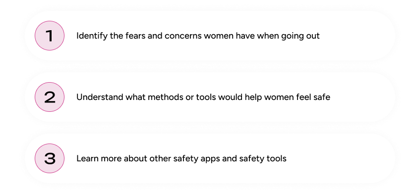
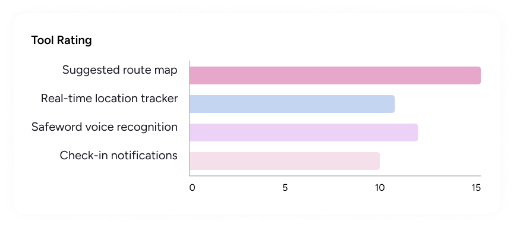
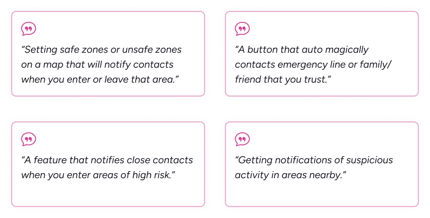
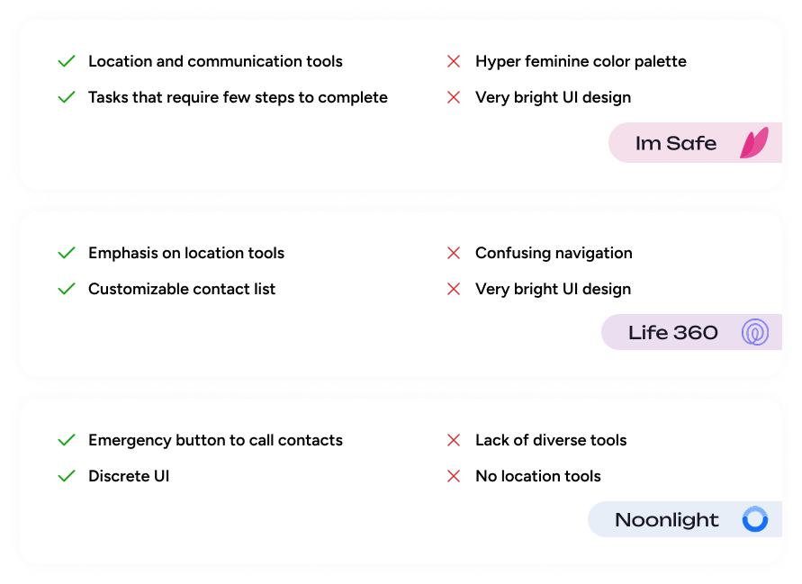
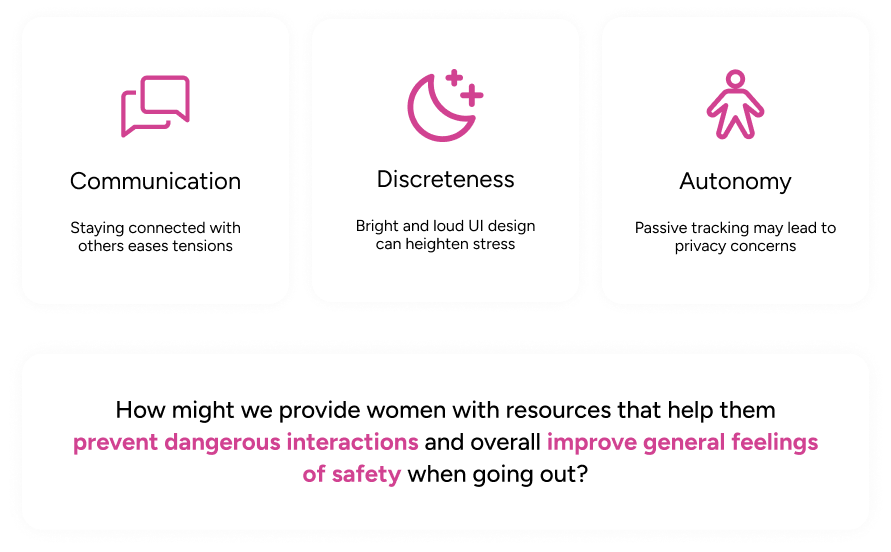
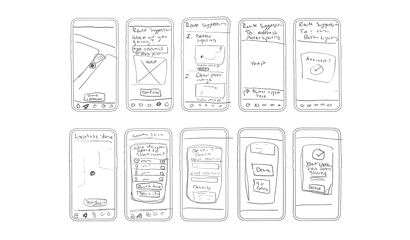
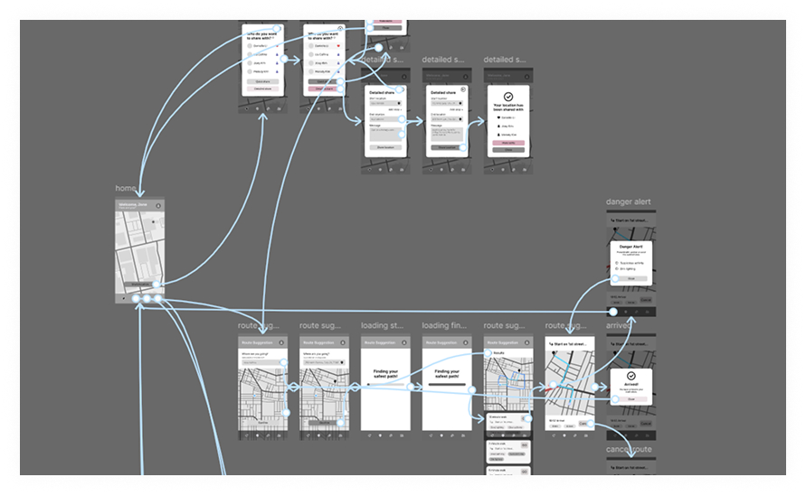
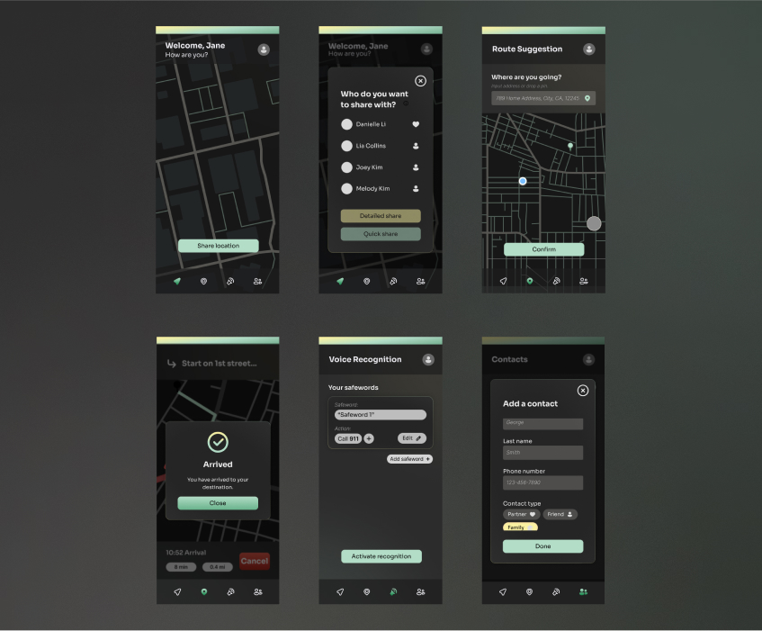
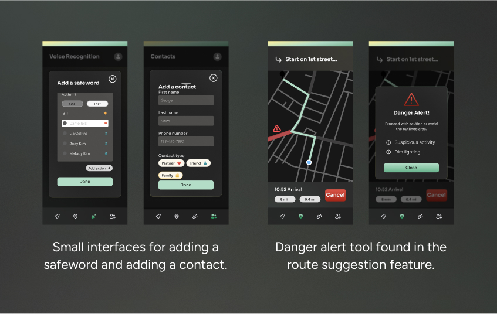
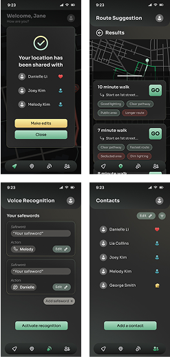

RESEARCH
Understanding the Problem
Outling the Goals
Before designing the product I needed to better understand this sensitive topic and learn about how women feel about general safety. These are the goals I generated to direct my research.

Connecting with the Users
I created a user survey that gathered 18 responses, aimed to collect qualitative and quantitative data. The goal was to reach out to the target audience to understand their feelings about personal safety and tools they would like to see in an app.

From this survey I found that many people, mainly women, feel unsafe in public, especially at night. Most respondents preferred location-based tools and some testimonials specifically requested a tool that integrated location, marked areas, and maps. Respondents also wanted a method of contacting or notifying trusted contacts.

Looking at Market Competitors
I conducted a competitive analysis on three popular competing safety apps: Im Safe, Life 360, and Noonlight to analyze their strengths, weaknesses, and how I could leverage this information to optimize my product. I took a closer look specifically at what types of tools apps focused on: location based or communication based, how discrete their UI was, and navigation intuitiveness.

DEFINE
Determining the Scope
After research I determined these three themes: communication, discreetness, and autonomy. Communication is a backbone of safety - many individuals feel safe when they are in communication with another person. Discreteness in visuals can prevent unwanted attention and lower stress. Concerns on privacy with the constant location tracking and voice sensing leads to giving the user autonomy or the choice to use those tools at their discretion. Knowing this, I formulated my problem statement to drive the project.

IDEATE
Brainstorming Solutions
Sketching the Initial Ideas
My low-fidelity sketches captured the main static screens of the four different tools, but also were created to be a wireflow. From these sketches I was able to understand the flow of navigating through different tools and steps, visualize the interface and how elements harmonize with each other, and flesh out the mechanics and details of tools.

Digitalizing the Ideas
After developing the low-fidelity designs, I took my sketches and digitalized them as mid-fidelity wireflows in Figma. This was a fully functional prototype with multiple safety tools and a simple UI design. I experimented with white space and sizing to reduce cognitive load.
Creating a wireflow strengthened my understanding of how different elements interact with one another in addition to how a user would navigate through the app’s tools.

PROTOTYPE
Bringing it all Together
Design System
For my design system, I opted for a dark mode UI to create a more discrete interface. This would be ideal in dark or low light settings so that the glow of a bright, white screen wouldn’t attract unwanted attention.
I used green and yellow in subtle gradients and lower saturation shades to employ a smoothing feeling. These colors and application methods are more calming to reduce stress during potentially high-risk situations.

High-Fidelity Version 1
My first high-fidelity iteration integrated the design system and focused on refining the visual design and functions of the tools. I carefully considered the visual presentation to optimize readability and cohesion for the purposes of a future usability test.
Main features include a minimalistic, modern design to reduce distractions and unnecessary content, user activation buttons to empower users and protect their privacy, simple tasks with short steps, and tool customization to fit the user’s needs.

Usability Testing
I conducted 5 user tests with users between the ages of 20 - 22 to identify areas of improvement. These users were all UC Davis students, three of which being female, two being male. I asked them to complete the main functions of the app: share your location, find a suggested route, activate voice recognition and create a safeword, and add a contact.
This usability test revealed unnoticed design issues and allowed me to gather new ideas while engaging with my target audience. Key takeaways included the suggestion to integrate the danger alert function into the main map, making actions like adding a safeword or contact more accessible, and improving the overall readability of colors and text.

FINAL DESIGNS
The Solutions
Final Designs
After a 5-week research and design process, the Safely prototype was complete. The final design features four core tools: live-location sharing, route suggestions, voice recognition, and a contacts list. The visual design is a modern and sleek look. It uses a dark visual palette to reduce brightness during dark settings and uses calming green and yellow tones for accents.



TAKEAWAYS
What I Gained as a Designer
01 Empathize with the audience.
For this project I conducted 5 usability tests which provided beneficial insight on how I could further improve my product. It gave me the opportunity to talk to my target audience and get more in-depth, detailed responses on how they felt about my designs. With that feedback I made the appropriate changes to fit the needs of my users.
02 Conduct in-depth research.
The Safely project required substantial research to create a successful design. I learned how to compare my work to market competitors and how to conduct and write unbiased surveys. Gathering this data informed my design process and supplied me with information about my target audience.
03 The power of prototyping.
The Safely project was created to be a fully functioning prototype in Figma. I quickly picked up the importance of components and a clearly defined design system. Using these tools allowed for greater efficiency and consistency. Utilizing components and a design system is a crucial tool that will help me in the future.